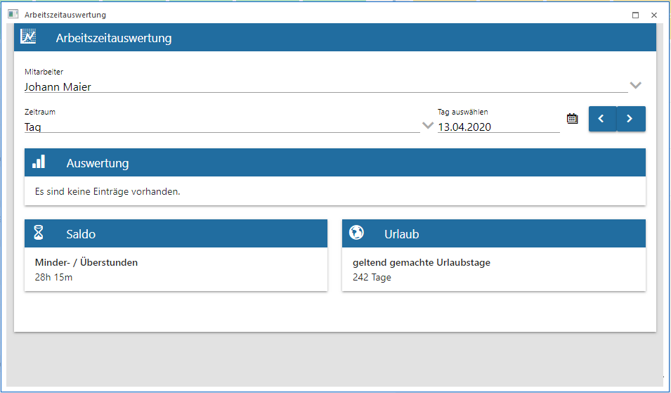
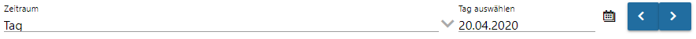
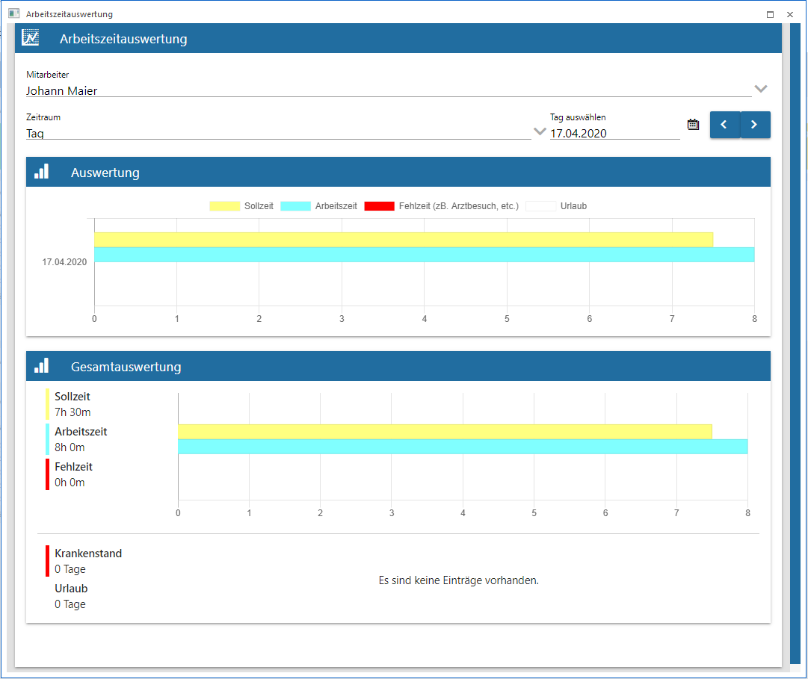
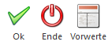
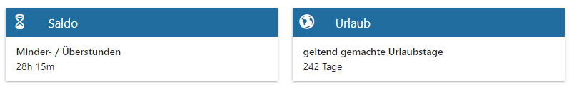

Unter
1 WinLine INFO
1 SMART
1 Arbeitszeitauswertung
erhält man eine einfache Übersicht und Gegenüberstellung der verschiedenen Istzeiten zu den Sollzeiten.

Ø Mitarbeiter
Auswahl des Arbeitnehmers bzw. Mitarbeiters über die Auswahllistbox oder über die Autovervollständigung.
Ø Zeitraum
Über eine Auswahllistbox kann der Zeitraum selektiert werden, dabei stehen folgende Zeitraumselektionen zur Verfügung:
Je nach Zeitraumselektion ändert sich die Eingabe für den Zeitraum:
ü Tag

ü Woche
ü Monat-Tagesansicht
ü Monat-Wochenansicht
Nach der Auswahl des Arbeitnehmers bzw. Mitarbeiters und des Zeitraumes werden die Daten Sollzeit, Arbeitszeit, Fehlzeit und Urlaub unter dem Bereich "Auswertung" angezeigt.

Abhängig von der Auswahl des Zeitraumes wird im Bereich "Gesamtauswertung eine Summe der Soll-, Arbeits-, Fehlzeit, Krank und Urlaub angedruckt.
Hinweis:
In der Arbeitszeit-Summe werden die Zeitarten Ist-, Fehlzeit und Urlaub gerechnet.
Buttons

Ø OK
Mit dem OK-Button oder mit der Enter-Taste werden die selektierten Einstellungen angezeigt.
Ø Ende
Mit dem Ende-Button wird das Fenster geschlossen.
Ø Vorwerte
Bei diesem Button werden Urlaub und Saldo der Vorzeiten angezeigt.

Beim Saldo werden die im Arbeitnehmer- bzw. Mitarbeiterstamm eingetragenen Salden berücksichtigt. Beim Urlaub wird die Resturlaubsberechnung aus dem WinLine Lohn angezeigt.